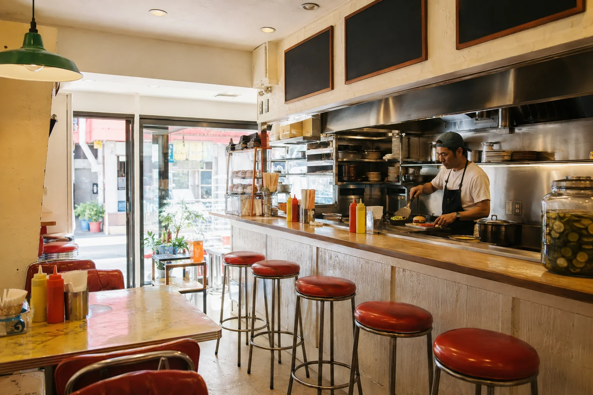
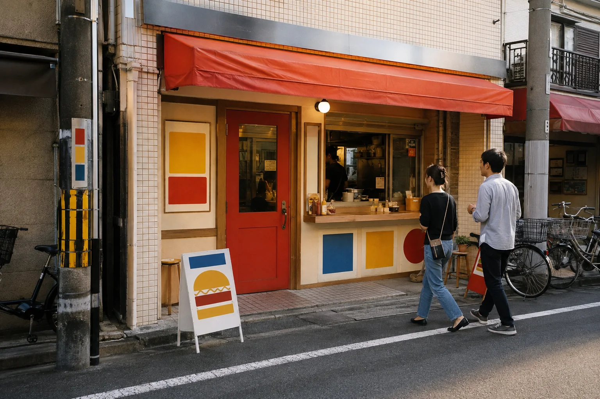
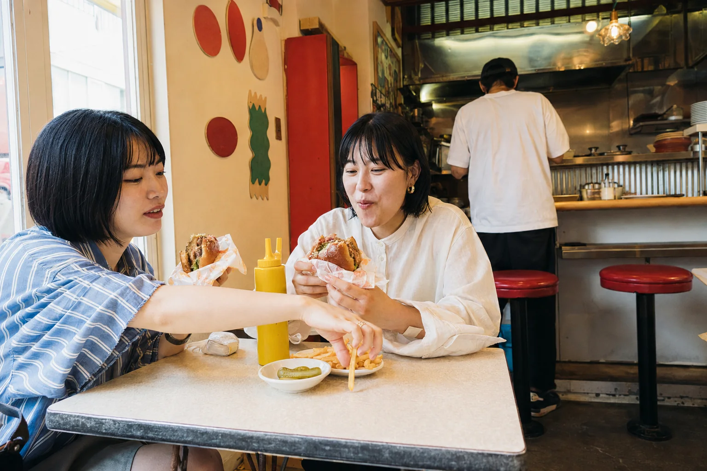
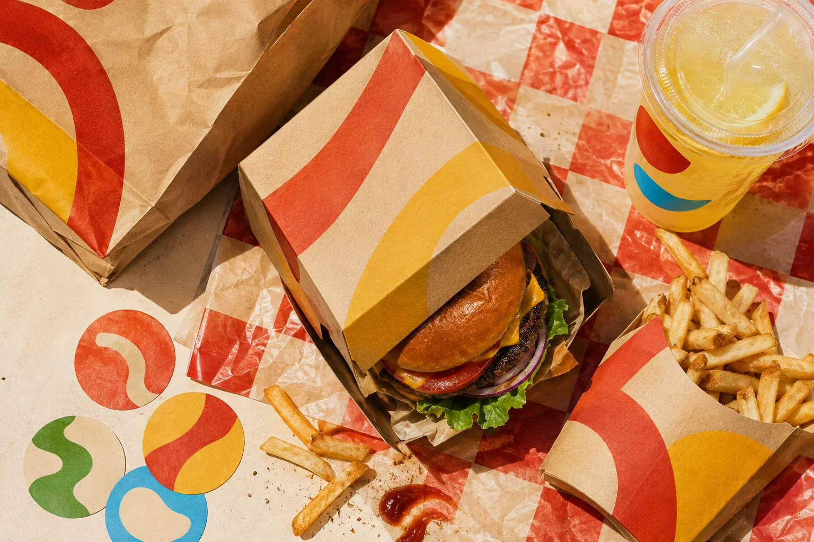

BOTTOM BUN
BURGER
OSAKA · FRESH BUNS · SINCE 2026
腹いっぱいって、
しあわせだ。
焼きたてバンズに、肉汁たっぷりの100%ビーフ。
今日も豪快に、かぶりつこう。

BEEFOSAKA!
OPEN 11:00—22:00SCROLL TO EAT ↓TAKE OUT OK!
FRESH BUNS ★ 100% BEEF ★ BIG BITE ★ GOOD DAY ★ FRESH BUNS ★ 100% BEEF
★ BIG BITE ★ GOOD DAY ★
TODAY'S BURGER / 01—05
今日、何食べる？
CLASSIC BUN BUN
クラシック バンバン
迷ったら、まずはこれ。肉も野菜もソースも、全部しっかり。ビーフ / チェダー / レタス / トマト / オニオン / BUN BUNソース
¥1,380BUILD YOUR BURGER
うまいバーガーは、
ちゃんと重ねる。
スクロールすると、今日の一個ができあがります。
ORDER #088
いま、1つ目。焼きたてバンズ
BOTTOM BUN
BEEF
CHEESE
VEGETABLE
SAUCE
TOP BUN
DONE!
BEEF
100%ビーフ
つなぎなし。注文が入ってから、ぎゅっと焼く。CHEESE
チェダーチーズ
熱々のパティにのせて、角がとろけるまで。VEGETABLE
シャキシャキ野菜
レタス、トマト、オニオン。山盛りがうちの普通。SAUCE
オリジナルソース
ピクルスとスパイスをきかせた、秘密の自家製ソース。TOP BUN
仕上げのバンズ
ぎゅっと重ねて、包んだら完成。GRILLEDTO ORDER
THE BEEF / OUR RULE
肉は、ちゃんと
肉らしく。
つなぎを使わない100%ビーフ。注文をもらってから鉄板にのせ、表面は香ばしく、中は肉汁を閉じ込めて焼き上げます。
BEEF 100%HAND PRESSEDHOT & JUICY
SIDE MENU
バーガーだけじゃ、
終われない。
SET MENU
お腹に合わせて、どうぞ。
BURGER好きなバーガー＋FRIES揚げたてポテト＋DRINK選べるドリンク＝+¥550
ちょい足し SMALLちょうど満腹 REGULAR今日は本気 BIG

GOOD FOOD, GOOD MOOD

PEOPLE AT BUN BUN
うまいもの食べると、
だいたい笑ってる。

TAKEME!
TAKE OUT
店でも。家でも。
公園でも。
できたてを、ひとまとめ。バーガーもポテトもレモネードも、BUN BUNカラーで連れて帰れます。
BURGER BOXPAPER BAGDRINK CUPWRAPPING PAPER
ACCESS / FICTIONAL SHOP
駅から5分。
お腹を空かせてどうぞ。
大阪市北区バンバン町 8-8
地下鉄「バンバン駅」2番出口から徒歩5分
BUN BUN STATION
|||||
コンビニちいさな公園BUNBUN
READY TO EAT?
今日、バーガーに
しない？